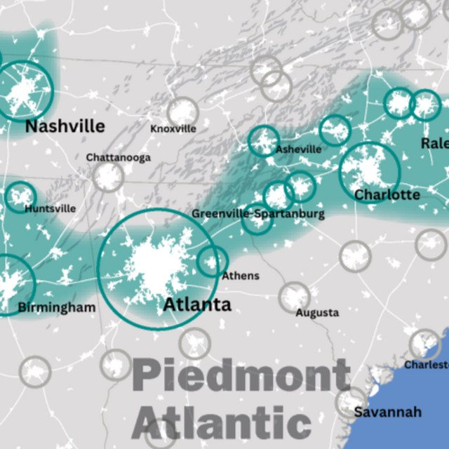

The Eclectic Polymath Podcast · Archive
#132 The Piedmont Atlantic Megaregion: Growth, Infrastructure, and the Making of "Charlanta"

About this episode
The Southeast is starting to function less like a collection of separate cities and more like one enormous economic region.
This episode looks at the rise of the Piedmont Atlantic Megaregion, sometimes nicknamed “Charlanta,” stretching across major growth centers like Atlanta, Charlotte, the Research Triangle, and beyond. It gets into the industries, supply chains, ports, advanced manufacturing, finance, biotechnology, and population growth that are knitting the region together.
We also get into the gap between economic integration and physical connectivity: weak intercity transit, fragmented governance, water and energy constraints, and the case for high-speed passenger rail. This is a story about what happens when a region grows faster than the infrastructure connecting it—and whether the Southeast can turn that growth into a truly integrated megaregion by 2050.
Key points
- The Southeast is starting to function less like a collection of separate cities and more like one enormous economic region.
- This episode looks at the rise of the Piedmont Atlantic Megaregion, sometimes nicknamed “Charlanta,” stretching across major growth centers like Atlanta, Charlotte, the Research Triangle, and beyond.
- This is a story about what happens when a region grows faster than the infrastructure connecting it—and whether the Southeast can turn that growth into a truly integrated megaregion by 2050.
More like this
 #209 Pompeii: The City That Didn't Know It Was EndingOctober 14, 202648:06
#209 Pompeii: The City That Didn't Know It Was EndingOctober 14, 202648:06 #197 Spirit Halloween: The Business of the Pop-UpOctober 8, 202648:16
#197 Spirit Halloween: The Business of the Pop-UpOctober 8, 202648:16 #170 Hong Kong Under Japan: The Three Years and Eight Months That Changed the CitySeptember 21, 202659:25
#170 Hong Kong Under Japan: The Three Years and Eight Months That Changed the CitySeptember 21, 202659:25 #154 Salvador: Black Brazil, Colonial Power, and the Fractured CitySeptember 11, 202652:35
#154 Salvador: Black Brazil, Colonial Power, and the Fractured CitySeptember 11, 202652:35